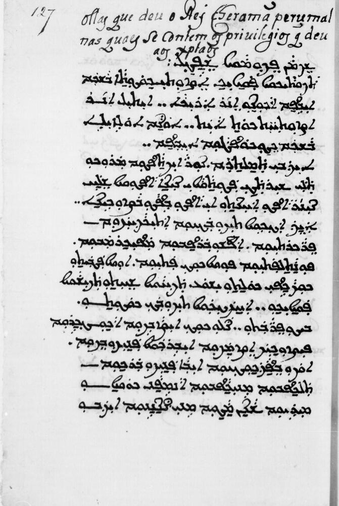
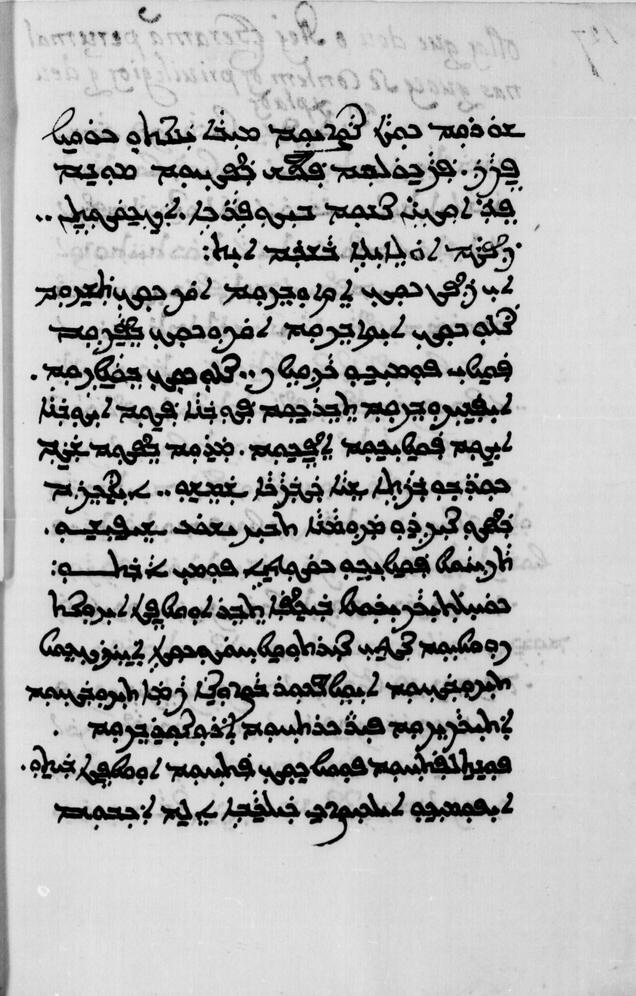
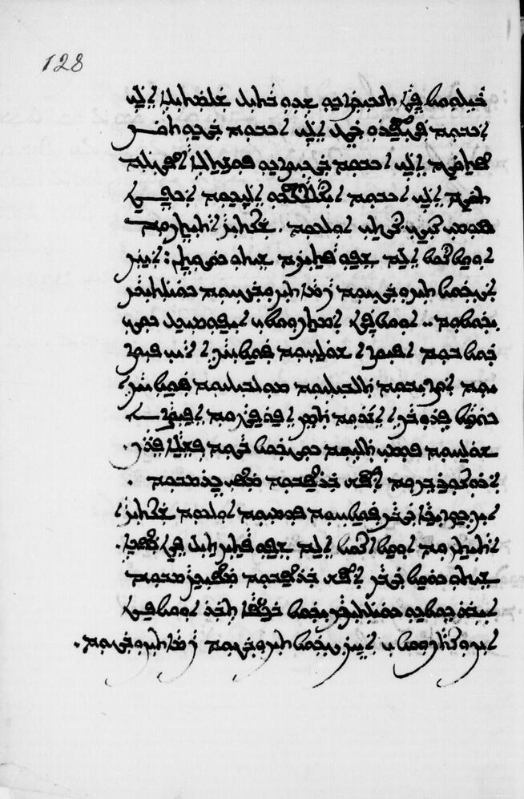
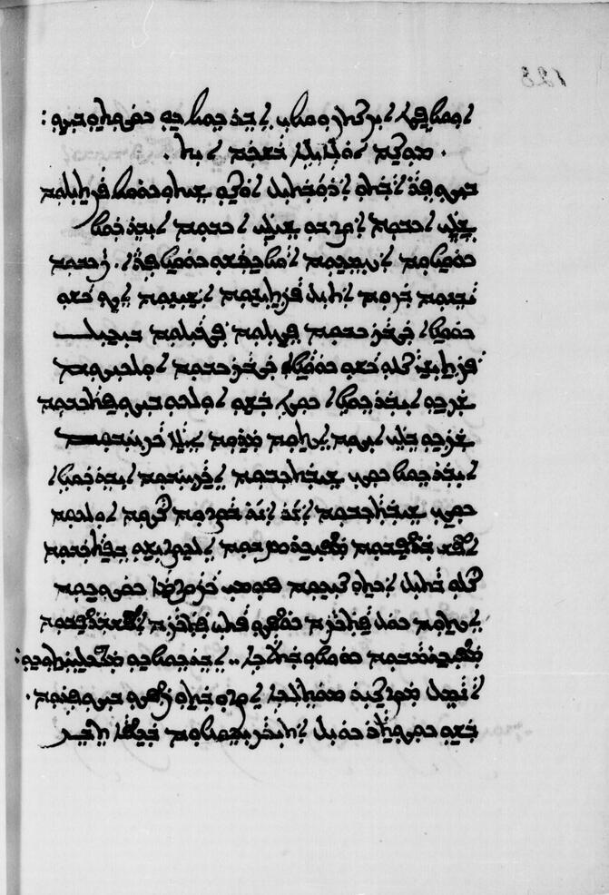
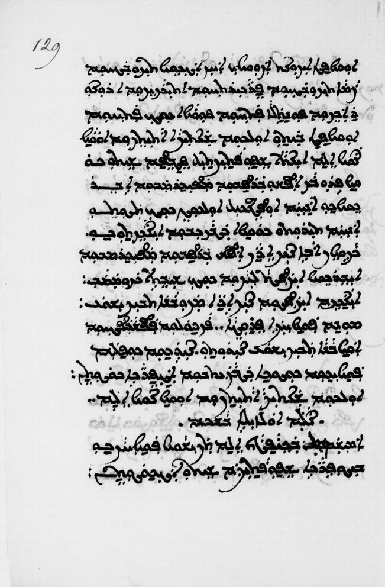
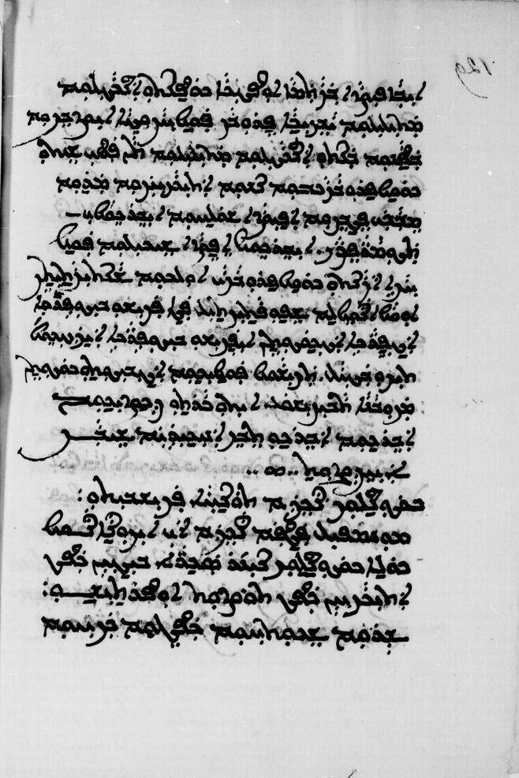
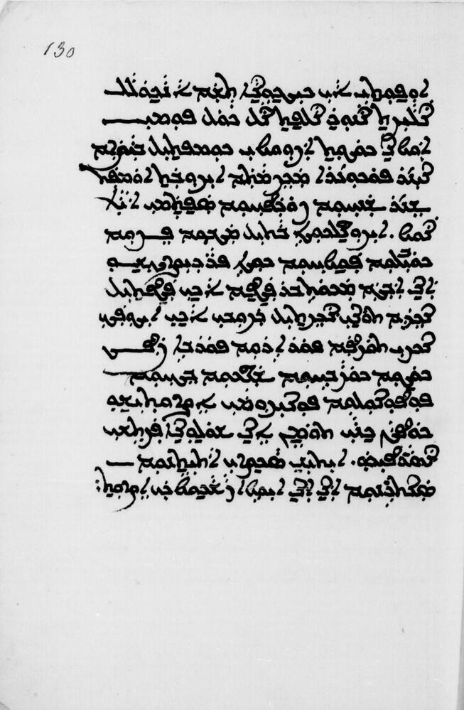

The Tharisappally Syrian Christian Copper Plates are among the most significant historical documents pertaining to the St. Thomas Christians of Kerala. These copper plates, dating back to the 9th century, contain royal grants and privileges given to the Syrian Christian community. The plates are written in a combination of scripts including Karshon (Syriac script for Malayalam) and other regional scripts.
Below is a detailed transcript of the seven plates, presented with both the original Karshon text and its Malayalam translation. Each plate contains important historical information about the rights, privileges, and social status of the Syrian Christian community during the medieval period.







Note: This transcript is based on historical research and may contain variations from the original text. The Karshon script represents the Syriac script adapted for writing Malayalam, which was commonly used by the St. Thomas Christians.
Back to Articles